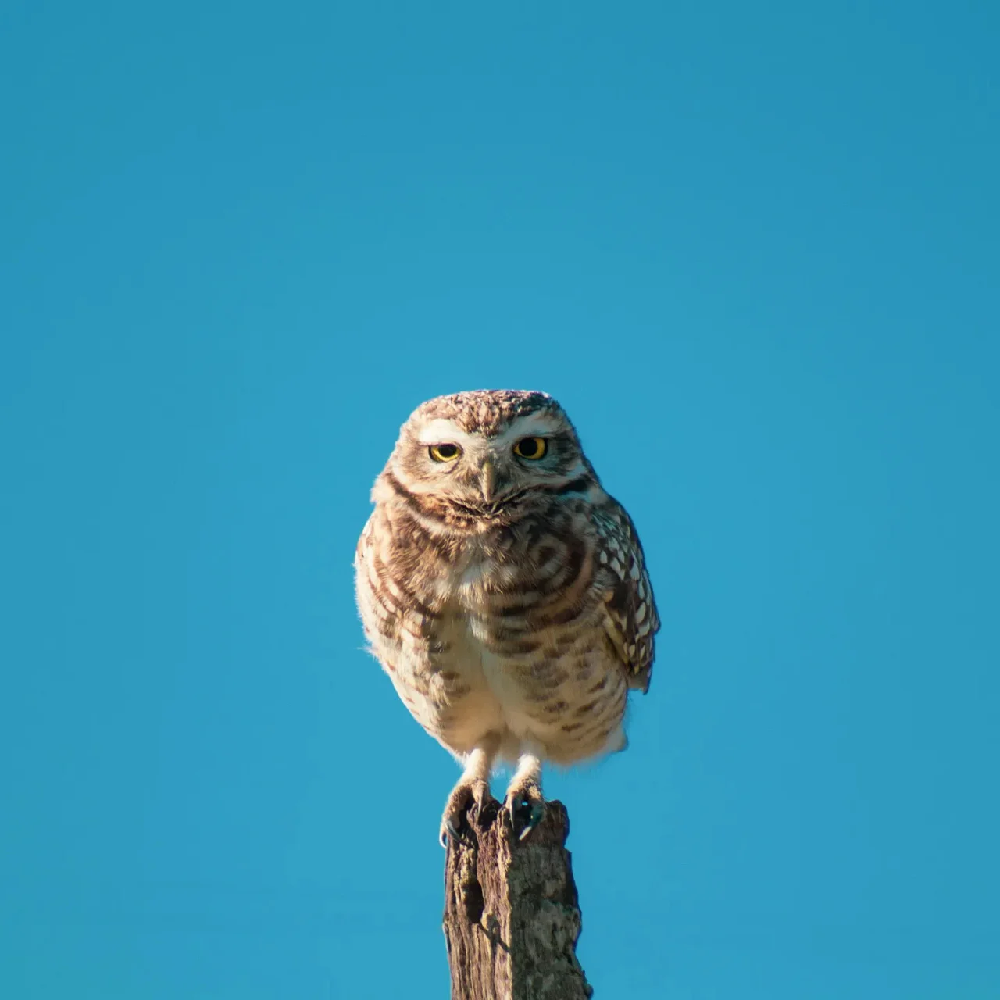

올빼미는 천천히 눈을 깜빡였다. 마치 지난 10분 동안 있었던 일에 대해 엄청나게 실망한 것처럼 보였는데, 솔직히 말해서 나도 마찬가지였다.
나와 이 올빼미는 서로를 쳐다보며 일종의 무언의 대치 상태에 빠져 있었다. 내가 이 정도로 꼼꼼히 살펴볼 만한 짓을 한 것도 아닌데 말이다. 하지만 저기 있었다, 그 낡은 울타리 기둥에 앉아서 마치 내가 평생 책을 한 권도 읽어본 적이 없다고 말한 것처럼 나를 내려다보고 있었다.
“알겠어, 친구. 넌 장엄하고 뭐 그런 거지.” 나는 손을 허공에 흔들며 말했다. 올빼미는 더 느리게 눈을 깜빡였다. 해부학적으로 가능했다면 눈알을 굴렸을 거라고 맹세할 수 있다.
커피 한 잔 마시러 나가서 그냥 평범한 인간처럼 살아보려고 했을 뿐인데, 이게 내가 상상했던 하루의 모습은 아니었다. 하지만 아니, 나는 들판을 가로질러 지름길로 가야 했고, 이제 새한테 평가받고 있었다.
나는 그것을 가리키며 말했다. “너는 내가 오늘 겪은 개떡 같은 일들을 전혀 모를 거야. 감히 날 판단하지 마.”
올빼미가 고개를 기울이자 내 혈압이 올라가는 게 느껴졌다. 이 올빼미가 날 조롱하고 있는 건가? 깃털이 부풀어 올랐고, 잠깐 동안 뭔가 올빼미 지혜를 나한테 전해줄 것 같았지만, 그냥 벌써 지루해진 듯이 쳐다볼 뿐이었다.
“이래서 난 새들이랑 상대하기 싫어,” 나는 중얼거렸다. “자기들이 다른 모든 것보다 낫다고 생각하니까. 맨날 ‘부엉 부엉’ 거리고, 누가 물어봤나?”
왜 계속 말하고 있는지 모르겠어. 더위 때문인가? 아니면 점심을 아직 못 먹어서 약간 헛소리하는 건가? 아니면 그냥 이 들판에서 너무 오래 있었고 사람들과는 충분히 못 있어서 미쳐가고 있는 건가?
“넌 네가 아주 특별하다고 생각하는 거지?” 내가 물었다. “거기 앉아서 마치 올빼미 왕좌에라도 앉은 것처럼 굴고.”
올빼미가 또 눈을 깜빡였는데, 이제 보니 이게 그냥 나한테 가운데 손가락 치켜드는 올빼미식 표현인 것 같았다. 올빼미는 다른 데 갈 곳이라도 있는 것처럼 시선을 돌렸는데, 뭐 온 세상이 다 하늘이니까 어쩌면 진짜 그럴지도 모르지.
“야, 너도 꺼져,” 나는 씩씩거렸다. “넌 날 몰라.”
그리고 그때였다. 작별 인사 부엉 소리 한 번 없이, 올빼미는 날개를 펴고 날아올랐다. 내가 주목할 가치도 없다는 듯이 푸른 하늘로 날아갔다. 뭐, 그래, 좋아, 어쩌면 정말 그랬을지도 모르지.
올빼미가 날아가는 걸 지켜봤는데, 잠깐 동안 거의 감탄할 뻔했다. 거의. 근데 그때 내가 아직도 들판에 서서 혼자 말하고 있다는 걸 깨달았고, 이번 라운드는 아마 올빼미가 이긴 것 같다는 생각이 들었다.
고개를 저으며 차로 돌아가기 시작했다. “그래, 잘난 척하면서 날아가라. 내가 신경이나 쓸 줄 아나.”
지금쯤이면 아마 마을 반대편까지 날아갔겠지. 눈에 띄는 다른 불쌍한 바보를 조용히 판단하러 갔겠지. 돌멩이를 걷어찼더니 기분이 좀 나아졌지만, 그다지 많이는 아니었다.
다음번엔 먼 길로 가자고 스스로에게 메모해둬야겠어.
The owl blinked slowly, like it was profoundly disappointed in how the last ten minutes had gone, which, frankly, made two of us.
We stared at each other, me and this owl, locked in some kind of silent standoff. It wasn’t like I’d done anything to deserve this level of scrutiny, but there it was, perched on that old fencepost, looking down at me like I’d just told it I’d never read a book in my life.
“Alright, buddy, I get it. You’re majestic or whatever,” I said, waving a hand in the air. The owl blinked, slower this time. I swear it could’ve rolled its eyes if that were anatomically possible.
This was not how I pictured my day going when I set out to grab some coffee and, I don’t know, maybe be a normal human being. But no, I had to take a shortcut through a field, and now I was being judged by a bird.
I pointed at it. “You have no idea the crap I’ve dealt with today. Don’t you dare judge me.”
The owl’s head tilted, and I could feel my blood pressure rising. Was this owl mocking me? Its feathers puffed up, and for a split second, I thought it was about to drop some kind of owl wisdom on me, but it just stared, like it was bored already.
“This is why I don’t deal with birds,” I muttered. “They think they’re better than everyone. Always with the ‘hoo, hoo,’ like anyone asked.”
I wasn’t sure why I kept talking. Maybe it was the heat. Maybe it was the fact that I hadn’t eaten lunch yet and was slightly delirious. Or maybe I was just losing it because I’d spent too much time in this field and not enough time around people.
“You think you’re so special, huh?” I asked. “Sitting up there like you’re on some kind of owl throne.”
The owl blinked again, which I was starting to think was just its version of flipping me off. It looked away, like it had somewhere better to be, which, considering the whole world was open sky to it, maybe it did.
“Well, screw you too, man,” I huffed. “You don’t know me.”
And then it happened. Without so much as a farewell hoot, the owl spread its wings and took off, soaring into the blue like I was beneath its notice. Which, okay, fine, maybe I was.
I watched it go, and for a moment, I was almost impressed. Almost. But then I remembered I was still standing in a field, talking to myself, and realized the owl had probably won this round.
I shook my head and started back toward the car. “Yeah, fly off like a smug bastard. See if I care.”
It was probably halfway across town by now, off to silently judge some other poor idiot who had the audacity to exist within its line of sight. I kicked a rock, feeling slightly better for it, but not much.
Note to self: next time, take the long way around.